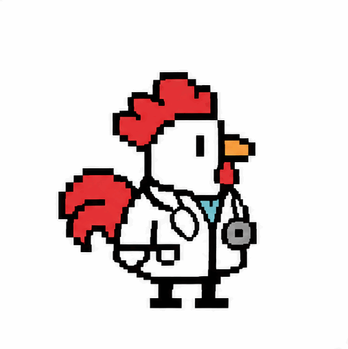

▸ Ciencia para curiosos
Tu cuerpo es el experimento más raro que vas a conocer.
Charlas, experimentos y mitos sobre el cerebro, el dolor y el movimiento, pensados para institutos. Sin fórmulas raras: con preguntas, retos y alguna que otra sorpresa.


01 · Charlas
Charlas para tu instituto
Cada charla dura una clase y está pensada para participar, no solo para escuchar.

02 · Laboratorio
Experimentos para hacer desde el móvil
Pruébalos tú, o en clase con toda la gente a la vez.

¿Qué estás midiendo?
Tus ojos ven el cambio de color, la señal viaja al cerebro, el cerebro decide y manda la orden a tu dedo. Todo eso, en una fracción de segundo.
La mayoría de la gente tarda entre 200 y 300 milisegundos. Lo curioso: los nervios son rapidísimos, así que casi todo ese tiempo se lo pasa tu cerebro procesando y decidiendo.
Prueba a repetirlo con sueño, después de hacer deporte o mientras alguien te habla. ¿Cambia tu marca?

03 · ¿Mito o ciencia?
¿Mito o ciencia?
Lee la frase, decide y toca la tarjeta para descubrir la respuesta.

04 · ¿Quién soy?
¿Cómo se llega a ser investigador?
Soy Rafael, fisioterapeuta e investigador. No hace falta ser un genio: hace falta curiosidad y no dejar de hacer preguntas.

05 · Próximamente
Lo que está por llegar al Aula
▸ Nivel siguiente
¿Quieres indagar más?
En la web principal encontrarás los temas completos, un hallazgo científico nuevo cada día con su pregunta y los artículos que publico como investigador.
Ir a la web principal →